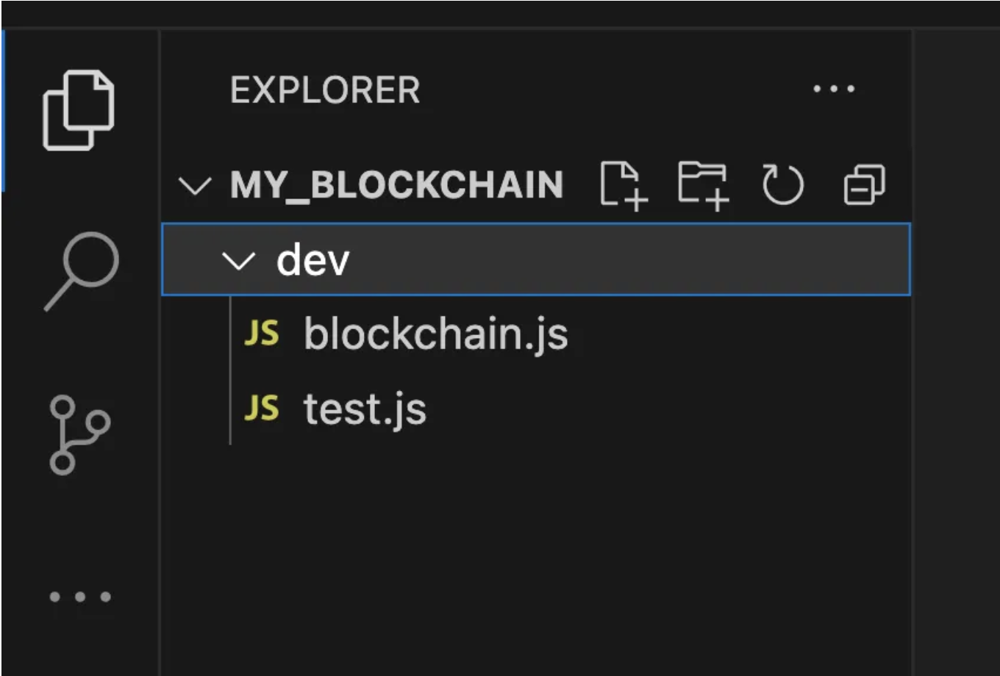
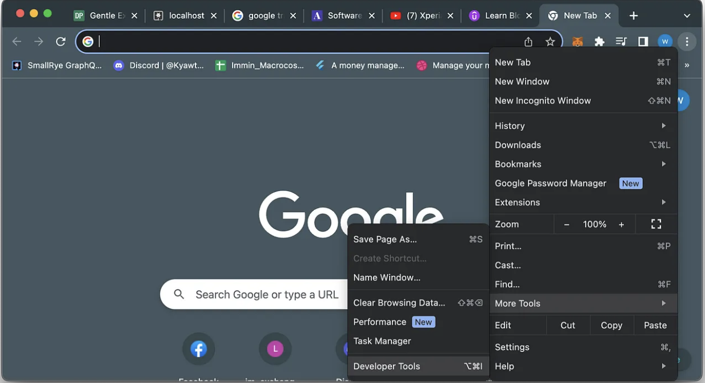
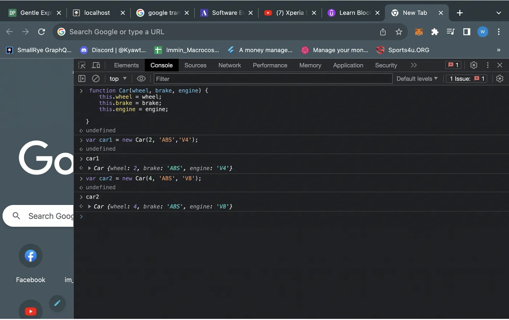
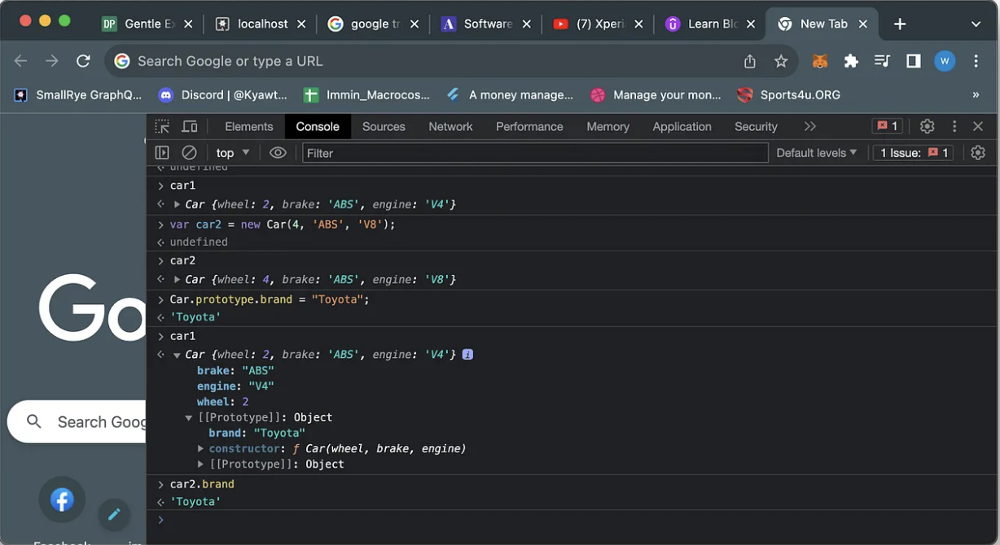
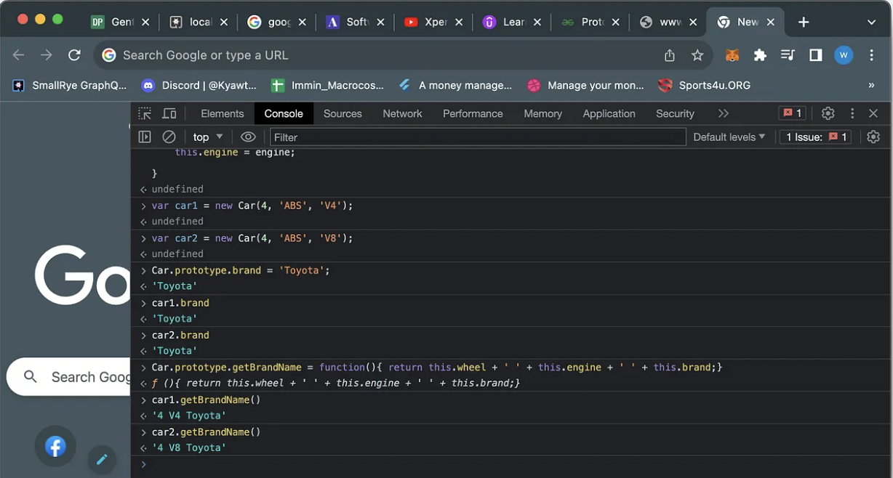

စကားချပ် အောက်ပါblockchain နှင့်ပက်သတ် သော သင်ခန်းစာများသည် ကျွန်တော့်ရဲ့ blockchain နဲ့ပက်သတ် ပီး ပြုလုပ်ခဲ့တဲ့ project မှ အတွေ့အကြုံများနှင့် လေ့လာခဲ့ဖူးသော course တခုမှ သင် ခန်းစာ များကို ပေါင်းစပ်ပီးရေးသားထားခြင်းဖြစ်ပါတယ် အခုပထမဆုံးတခုအနေဖြင့် blockchain prototype တခုကို javascript language ကို အသုံးပြုပီးရေးသားသွားပါမယ်။ အောက်ပါသင်ခန်းစာများကို လုပ် နိုင် ဖို့ဆိုရင် javascript နဲ့ ပက်သတ် ပီး အခြေခံ ကို တော့ ပိုင်ပိုင် နိုင်နိုင် သိဖို့ လိုအပ်ပါတယ်။ ပထမဆုံးအနေဖြင့် node ကို စက် မှာ install လုပ် ဖို့လိုပါတယ်။ အောက်က link ကို တချက် သွားပီးတော့ step by step install လုပ်သွားပါ။ https://nodejs.org/en/download Folder structure ကိုအောက်ပါ အတိုင်း ဆောက်လိုက်ပါ။
ပိး ရင် တော့ my_blockchain အောက်မှာ npm init ဆိုတဲ့ command လေးကို ရိုက်ပါ my_blockchain folder အောက်မှာ package.json ဆိုတဲ့ fileလေး ကို တွေ့လာပါလိမ့်မယ်။ ok အဲဒါဆိုရင်တော့လိုအပ်တဲ့ environmen setup လေးတော့ပီးပါပီ။အဲဒါဆိုရင် blockchain data structure တခုကိုစပီး တည်ဆောက်သွားပါမယ် စာလေးပြန်နွေးတဲ့အနေနဲ့ constructor နဲ့ prototype အကြောင်းကို ပြန် ဆွေးနွေးသွားပါမယ်
function Car(wheel, brake, engine) {
this.wheel = wheel;
this.brake = brake;
this.engine = engine;
}
Car ဆိုတဲ့ constructor function လေး ကို တော့ ရေးသားပီး ပါပီ။ ဆိုပါစို့ ကားတိုင်းမှာ engine, brake, wheel, ပါရမယ်ဆိုပီးယူဆကြည့်ပါဒီconstructor function လေး ကို သုံးပီးတော့ instance တွေအများကြီး create လုပ်လို့ရသွားပါမယ်။ အောက်က code လေး ကို ဆက်ပီး လေ့လာကြည့်ပါ။
var car1 = new Car (4, ‘ABS’, ‘V4’);
var car2 = new Car (4,’ABS’, ‘V6’);
car1 ရော car2 ရောမှာ car တခုမှာ ရှိရမယ့် properties တွေ ဖြစ် တဲ့ engine, brake, wheel တွေပါမှ car1 and car2 instance တွေပြုလုပ်လို့ရမှာကိုတွေ့ရမှာဖြစ်ပါတယ်။အောက်မှာပြထားတဲ့အတိုင်းစမ်းကြည့်ပါ ပိုမို ပီး နားလည်လာပါမယ်။
 နောက်ထပ်ထပ်ပီးတော့ဆွေးနွေးသွားမှာတော့ prototype အကြောင်းဖြစ်ပါတယ်။ သူကဘယ်လိုမျိုးလည်းဆိုတော့ constructor မှာ prototype ကိုသုံးပီးတော့ property (သို့) function ထည့်လိုက် ပီဆိုတာနဲ့ အဲ property (သို့) function ကို အဲ constructor ရဲ့ instance တွေအကုန်လုံးကနေ access လုပ်နိုင်မှာဖြစ်ပါတယ်။ အပေါ်ရေးထားတဲ့ constructor လေးကို သုံး ပီးတော့ prototype လေးကို ရေးပြသွားပါမယ်။ Car.prototype.brand = “Toyota” ဆို တဲ့ code ကလေး ကို ရေးလိုက်တာနဲ့ Car constructor ကို သုံးပီး ဆောက်ထားတဲ့ instance အကုန်လုံးမှာ အဲ property လေး ကို access လုပ်နိုင် သွားမှာဖြစ်ပါတယ်။ အောက် က code ကလေး ကို တချက်လေ့လာကြည့်ပါ။ Prototype မှာ property ကို ထည်ံ့တာအပြင် function တွေကို လည်း ထည့်နိုင်ပါတယ်။ အောက် က code ကလေး ကို ဆက်ကြည့်ရအောင်။
Car.prototype.getBrandName = function()
{
return this.wheel + ‘ ‘ + this.engine + ‘ ‘ + this.brand;
}
အပေါ် code လေး ထည့်လိုက်တာနဲ့ car instance တိုင်း မှာ အဲ function လေး ကို access လုပ် နိုင် သွား မှာဖြစ်ပါတယ်။ အောက်မှာပြထားတဲ့အတိုင်းစမ်းကြည့်ပါ ပိုမို ပီး နားလည်လာပါမယ်။
 Blockchain constructor function ကို စရေး ပါတော့မယ်။ အပေါ်မှာဆောက်ထားတဲ့ my_blockchain folder အောက်က blockchain.js ထဲမှာ ရေးသားသွားပါမယ်။
blockchain.js
Function Blockchain() {
this.chain = [];
this.newTransactions = [];
}
Blockchain.prototype.createNewBlock = function(nonce, previousBlockHash, hash) {
const newBlock = {
blockNo: this.chain.length + 1,
timestamp: Date.now(),
transactions: this.newTransactions,
nonce: nonce,
hash: hash,
previousBlockHash: previousBlockHash
}
this.newTransactions = [];
this.chain.push(newBlock);
return newBlock;
}
ဒီ ကုဒ်ကလေး ကို ရှင်းပြသွားပါမယ်။ blockNo ကတော့ new block ရဲ့နံပါတ်ဖြစ်ပါတယ်။ timestamp ကတော့ ဒီ block အသစ် ပြုလုပ်တဲ့ အချိန်ကို သိမ်းဆည်းထားတာဖြစ်ပါတယ်။ nonce ကတော့ int type ဖြစ်ပါတယ် သူ က ဘယ်ကနေရတယ်ဆိုတာရယ်ဘာကြောင့် သုံးတာလည်းဆို တာ ကို နောက်ပိုင်း code နဲ့ ရှင်းပြသွားပါမယ်။ ရှိသမျှ pending transactions မှန်သမျှကို block ထဲမှာ သိမ်းဆည်းသွားမှာဖြစ်ပါတယ်။ အဓိက အရေး ကြီးတဲ့ အချက် လာပါပီ။ hash ကဘယ်ကနေလာမလဲဆို တော့ block ထဲမှာ သိမ်းဆည်း ထားတဲ့ အချက်အလက်တွေပေါ်မူတည်ပီးတော့ ရရှိလာတာဖြစ်ပါတယ်။ နောက် ပိုင်း codeနဲ့တကွ ရှင်းပြသွားပါမယ်။ previousBlockHash ကတော့ new block no 2 ဆို ရင် block no 1 က block ရဲ့ hash ဖြစ်ပါတယ်။ ဆိုလို တာက block 1 က data ကို ပြင်ဆင် တာမျိုး ပြုလုပ် မယ် ဆို ရင် block 2 ရံဲ့ previous block hash ကို ပြင် ရပါတော့မယ် block 2 ရဲ့ previous block hash ကို ပြင် လိုက် တာနဲ့ block 2 hash လည်း ပြောင်း သွားပါပီ။ ဘာလို့ လဲဆိုတော့ block 2 ရဲ့ hash က block 2 မှာ အချက်အလက် အား လုံးကို hashing algorithm ကို သုံးပီး ရလာတာကြောင့်ဖြစ်ပါတယ်။ block 3 မှာလည်း ပြင်ရတော့မှာပါ အဲလို တသီတသန်း ကြီး လုပ် ရတော့မှာမို့ blockchain မှာ data တွေကို တစုံတယောက် က ပြင် ဖို့ မလွယ်ပါဘူး။ပီးရင်တော့ newTransaction ကို clear လုပ်ပီးတော့ chain ထဲမှာ newBlock ကို သိမ်းဆာည်းပါမယ်။ အပေါ်ကဟာကို စမ်းမယ်ဆို ရင် test.js မှာ အောက် က code ကိုထည့်ပီး terminal မှာnode my_blockchain/test.js လို့ ရိုက် ကြည့်ပါ
test.js
const Blockchain = require(‘./blockchain’);
const bitcoin = new Blockchain();
console.log(bitcoin);